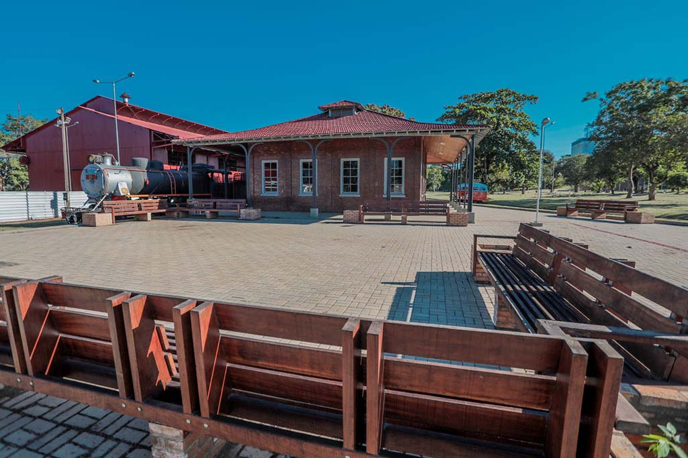
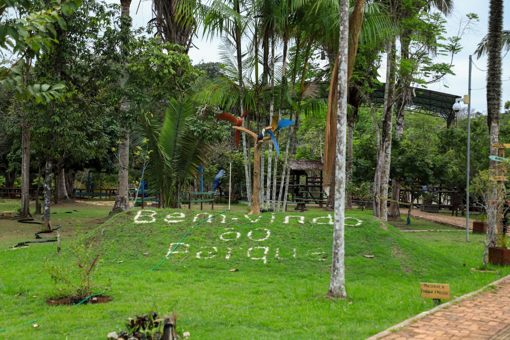

Um dos locais mais históricos da cidade, construído no início do século XX e símbolo da luta dos trabalhadores que ergueram a lendária ferrovia.
Conheça os principais pontos turísticos
Porto Velho possui diversos pontos turísticos que representam sua história, cultura e beleza natural. A seguir, alguns dos locais mais visitados por turistas e moradores.
Complexo da Estrada de Ferro Madeira-Mamoré

Parque Natural de Porto Velho

Área verde preservada ideal para trilhas, caminhadas e contato com a natureza.
Formulário de Contato
Entre em contato para saber mais sobre os pontos turísticos ou enviar sugestões.